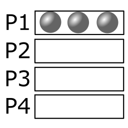
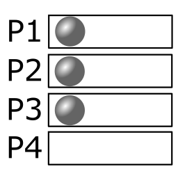

Artificial intelligence for a card game
To learn to play a card game implies firstly to learn the game rules, and then to be able to anticipate the game results. Artifical intelligences are designed in the same way: a game-graph implements the game rules, and walking the game-graph allows to anticipate the outcome. For a card game, the complexity is higher because a game is an incomplete-knowledge game. (Player's cards are hidden from other players.)
Methods of A.I
A first class of methods is called 'Evaluator' based-methods.
The evaluators compute the win esperence with the knowledge of the current game-state, including the history.
They are based either on heuristics, either on neural networks.
A second class of methods is called 'Tree-search' based-methods.
The nodes of the tree are all possible game-states.
The goal is to efficiently travel through the nodes.
The brute-force algorithm travels all of the nodes, from the initial game state to all possible final states.
This method can be used for small problems, but it becomes not feasible in terms of compute time for bigger problems.
The deep-search algorithm travels a limited number of nodes:
- the Alpha-Beta tree-search: same as brute-force, but skip some trees that don't contribute to the final result
- the Monte-Carlo tree-search: recursively refine evaluation of random game trees
The most promising method seems to be the Monte-Carlo Tree-Search (MCTS). This method is already explored and used by various games. Moreover, the MCTS can be extended for incomplete-knowledge game, known as the (incomplete) Information-Set Monte-Carlo Tree-Search (IS-MCTS). Finally, the MCTS and the IS-MCTS are well suitable to handle timing constrains, because they progressively refine the evaluation of the game tree over time and the current "best" evaluation is always available.
A world of probabilities
Before dealing with the IS-MCTS, let's dive into some probabilities!
Distribution of N cards over P players
The goal is to compute the distribution of N un-ordered cards, over P distinguished players. We already know that the total count of the distributions is \( P^N \). Indeed, for each card, we choose a player to give to.
Let's take an example, with 3 cards over 4 players:
|  |
There is 1 distribution per repetition, with 4 repetitions. (1 way to give all cards to a player, repeated by the player's choice (either P1, P2, P3 P4)) |

|
There are 3 distributions per repetition, with 12 repetitions. (Choose 1 card over the 3 cards to give to a player. Then, repeat by selecting 1 player over 4 and 1 player over the 3 remaining players.) |
|  |
There is 6 distributions per repetition, with 4 repetitions (Choose 1 card, then another card among the remaining cards. Then repeat by choosing the player that won't receive card.) |
The total count of the distributions is 4*1 + 12*3 + 4*6 = 64, that is the expected number.
The generic case with 4 players is: (x,y,z,w) has \( R \) repetitions, with \( D \) distribution per repetition, where
- \( R = C_{p_x}^{4} \times C_{p_y}^{4 - p_x} \times C_{p_z}^{4 - p_x - p_y} \times C_{p_w}^{4 - p_x - p_y - p_z} \)
- \( p_x \) is the number of players that receive \( x \) cards, \( p_y \) the number of players that receive \( y \) cards if \( x \neq y \) or 0 elsewhere, ...
- \( D = C_{x}^{x+y+z+w} \times C_{y}^{y+z+w} \times C_{z}^{z+w} \)
- \( C_k^n = \frac{n!}{k! (n-k)!} \) is the combination of \( k \) over \( n \). Note: another formula is used in practice.
- \( x \ge y \ge z \ge w \) and \( x + y + z + w = N \)
Constrained distribution of N cards over P players
I now consider that some players must receive a certain cards' count, or cannot receive more than a certain cards' count. With help of the result established above, we can easily discard invalid repetitions.
Probabilities of distributions
Given a distribution (like (x,y,z,w) with 4 players), its probability is given by \( \frac{D}{P^N} \).
Implementation details
Writing in progress...